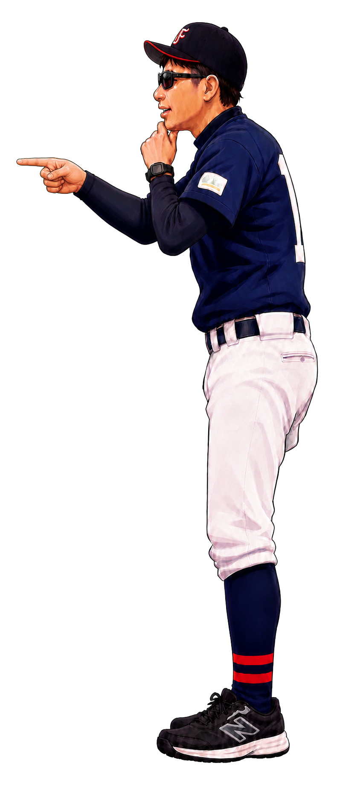

内野への打球＝かけぬけ
ゴロでもフライでも内野への打球では、1塁の先まで走り続ける。
ランナー編と同じグラウンドで学ぼう


盗塁！
1塁のベースで止まらず、その先まで全力で走り切ろう。
ゴロでもフライでも内野への打球では、1塁の先まで走り続ける。
1塁までの途中でふくらみ、1塁ベースを踏みながら2塁へ向かう。間に合わなければ急ブレーキして1塁へ戻る。
詰まっている：自分より後ろに、ランナーがいない空いた塁が1つもない状態です。後ろのランナーが次々に進んでくるため、ゴロでは元の塁へ戻れません。
例：自分が2塁にいて、1塁にもランナーがいる
詰まっていない：自分より後ろに、ランナーがいない空いた塁が1つでもある状態です。後ろから押し出されないため、アウトになりそうなら元の塁へ戻れます。
例：自分が2塁にいて、1塁にランナーがいない
2アウトなら、ゴロでもフライでも、バットにボールが当たった瞬間にゴー！
2アウト・3ボール2ストライクで、後ろが詰まっているとき：ピッチャーが投げた瞬間にゴー！ フォアボールなら自動で次の塁へ進めます。打球が飛んだときも、先の塁へ進めるチャンスが広がります。
監督の指示どおりに動こう。指示どおりに挑戦した結果なら、アウトになっても気にしなくて大丈夫です。
盗塁／スクイズ
盗塁・スクイズ：ピッチャーが投げた瞬間にゴー。早すぎると、ピッチャーからけん制球が来るので、ピッチャーをよく見よう。
スクイズとは？ バッターがバントでボールを転がす間に、3塁ランナーがホームインをねらう作戦です。バントが地面につく前に捕られたら、3塁へ戻らないとアウトになります。
盗塁やスクイズ以外では、ピッチャーが投球したら、最初のリードから次の塁へさらに2〜3歩進み、そこで状況を判断します。
早すぎるとアウトピッチャーが投げる前に二次リードを始めると、1塁へけん制球が来ます。ピッチャーをよく見て、投球と同時に動こう。
打球が飛ばなかったらキャッチャーがボールを持つので、元の塁へ戻ることも忘れない。
「プレー開始」を押してください。
基本は、次の塁を目指します。ただし、自分より後ろに空いている塁があり、目の前の守備がボールを持っていたら、無理に進まず元の塁へ戻る判断もあります。
まず元の塁へ戻ります。自分が戻る前にボールを塁へ返されるとアウトです。外野が捕ったあと、元の塁にふれてから次の塁へ走ることを「タッチアップ」といいます。次の塁までの距離と、捕った外野の位置を見て、間に合いそうなときにねらおう。
ピッチャーの投げたボールをキャッチャーが捕れず、後ろへ転がすことがあります。次の塁をねらうチャンス！ ボールを見て、一気にゴーしよう。